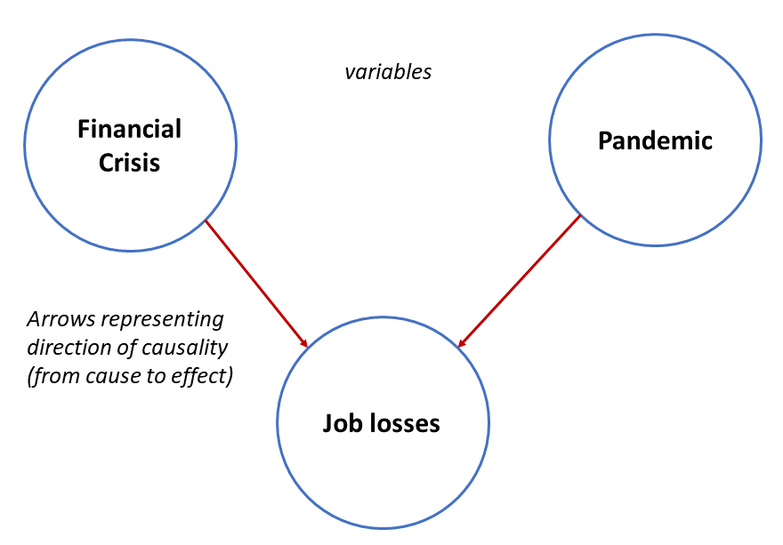
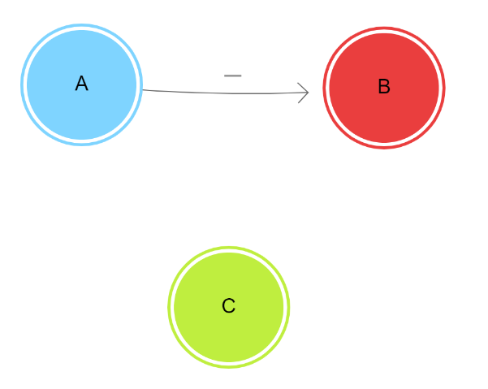

Welcome to the dynamic inference experiment
This experiment has been approved by the UCL ethics commitee. Please read the following carefully before moving on.
Please make sure you consent to the following
- Your data being used for research purposes but will be anonymised
- You can stop the experiment at anytime if you feel uncomfortable with the content or simply wish to.
Forms of causal reasoning (reasoning about causes and effects) are extremely common in everyday situations.
For example, you might use causal reasoning when deciding what to eat (e.g. avoiding certain foods you know might cause you stomach pains).
Any situation involving reasoning about causes and effects can be represented in what we call a "causal model".
Causal models are essentially diagramming that allow you to represent objects, events, items of information etc. as” NODES" (circles)
and draw arrows between these nodes to represent the relationship between them (e.g. cause and effect).
For example, if you wanted to represent the following information in a causal model:
You would first identify your elements of interest (nodes; RAIN, SPRINKLER, WET GRASS) and using arrows represent RAIN and SPRINKLER as causes of the effect: WET GRASS. The causal model would therefore look like the one below:

Sometimes, you might also want to say whether the cause makes the effect MORE or LESS likely e.g. rain makes wet grass MORE likely but if you had another node representing "sunshine" this would make the effect (wet grass) LESS likely.
To show this, you can either have a plus (+) or (-) sign next to the arrow to say if the cause makes the effect more likely (+) or less likely (-).
This can be shown in the causal model diagram below:
In today's task, you will first be presented with a set of concepts and asked to draw your own representation of their causal links using a tool called Loopy.
Loopy is an online tool that allows you to draw causal models by simply drawing nodes as circles and arrows to show the relation between these.
Please open Loopy now in a new tab following this link: https://ncase.me/loopy/v1.1/ so that you can switch back and forth between Loopy and this survey.
Here are how some example structures would look like in Loopy:
1) Simple cause and effect where the node A is the cause and B is the effect
2) Simple common cause diagram where node A is the cause of both B and C
3) Simple common effect diagram where node A and Node B both cause the effect C

Now open loopy the loopy tab (following this link: https://ncase.me/loopy/v1.1/) and keep it open in a separate tab for the duration of this experiment.
Delete anything on the initial screen using the ERASER tool and replicate each of the above diagrams as best as you can on the same page.
To draw a node simply use the PENCIL tool to draw a circle. You can rename your node and change its colour using the options on the right hand of the screen.
To draw an arrow between two nodes simply use the PENCIL tool to draw a line between them. The default arrow will have a "+" sign. This is all you will need for the present study so there is no need to ever change it to a "-”.
When you are done drawing each diagram (on the same page), go to the right-hand menu on the Loopy webpage and click "save as link".
Paste the link in the text entry box below.
One last practice round before you get started!
Clear your loopy page and start a new one!
Please represent the information below in a causal diagram on a fresh loopy page.
"Tom has a cough. The doctor thinks that it could be a symptom of either asthma or the flu".
Remember to rename your nodes with informative names (e.g. "cough").
Once you have finished, click "save as link" on the right-hand side menu and paste the link in the text box below.
Keep the diagram as simple as you can.
Let us start.
Please draw the arrows that correspond to your understanding of the causal dynamics in the following scenario.
You are a small town mayor who is trying to understand the interplay between Criminality, Police action and the Satisfaction of your population.
This is a complicated issue but sadly you only have access to three key indices:
- Crime Rate, representing the amount of Criminality in your town.
- Police action, representing the intensity of police action in your town
- Population satisfaction, representing how happy the population of you town is.
Without renaming, adding or removing nodes in the following loopy page, draw the arrows that you believe best how these concepts may affect each other.
Follow this link to a preset loopy page: Loopy Criminality
Once you have finished, click "save as link" on the right-hand side menu and paste the link in the text box below.
Keep the diagram as simple as you can.